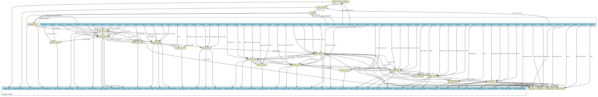

# AMBER Protein MD Setup tutorials using BioExcel Building Blocks (biobb) **Based on the official [GROMACS tutorial](http://www.mdtutorials.com/gmx/lysozyme/index.html).** *** This tutorial aims to illustrate the process of **setting up a simulation** system containing a **protein**, step by step, using the **BioExcel Building Blocks library (biobb)** wrapping the **Ambertools MD package**. *** ## Copyright & Licensing This software has been developed in the [MMB group](http://mmb.irbbarcelona.org) at the [BSC](http://www.bsc.es/) & [IRB](https://www.irbbarcelona.org/) for the [European BioExcel](http://bioexcel.eu/), funded by the European Commission (EU H2020 [823830](http://cordis.europa.eu/projects/823830), EU H2020 [675728](http://cordis.europa.eu/projects/675728)). * (c) 2015-2022 [Barcelona Supercomputing Center](https://www.bsc.es/) * (c) 2015-2022 [Institute for Research in Biomedicine](https://www.irbbarcelona.org/) Licensed under the [Apache License 2.0](https://www.apache.org/licenses/LICENSE-2.0), see the file LICENSE for details. 
{kind=link}